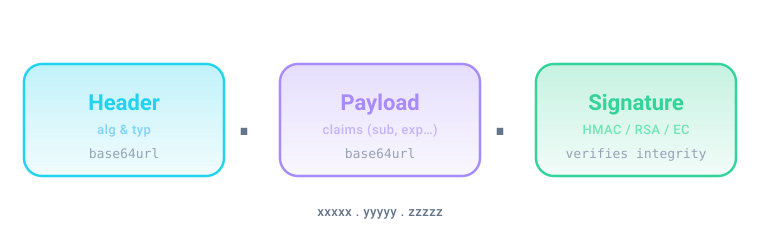
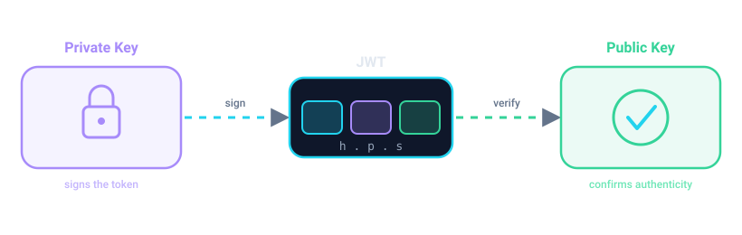
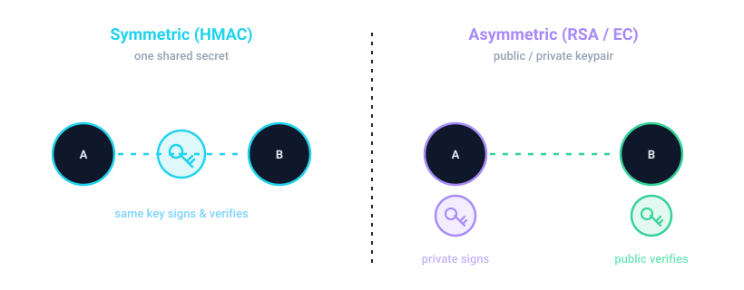
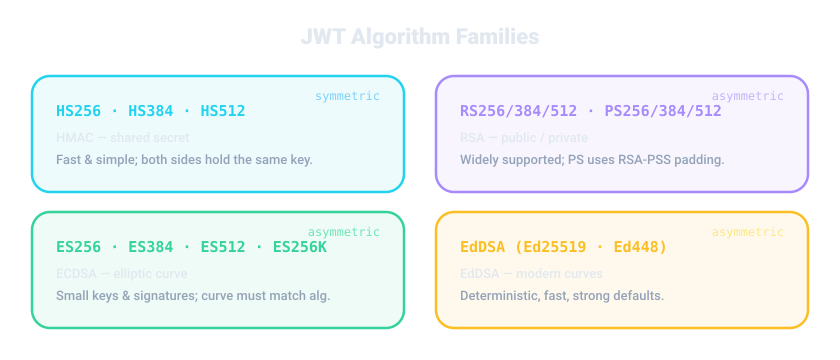
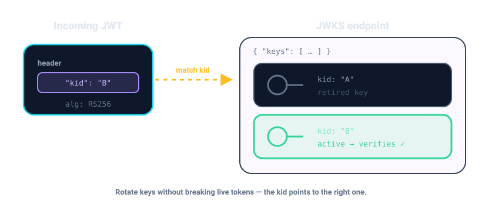

The PyJWT Codex
Learn JSON Web Tokens end-to-end — from the raw base64url bytes of a token to production OAuth2 / OIDC — with a deep, visual dive into the cryptography that makes it all work. 118 runnable, verified examples.

🗺️ Your learning path
📚 All modules
Module 01 · Foundations — What a JWT actually is
Decode a token by hand: base64url, the three segments, and why JWTs are readable.
Module 02 · Getting Started with HS256
Your first encode/decode with HS256 — secrets, round-trips, str vs bytes.
Module 03 · Registered Claims
The seven registered claims: iss, sub, aud, exp, nbf, iat, jti.
Module 04 · Custom Claims & Validation Options
Custom claims plus the decode() control surface: options, require, leeway.
Module 05 — HMAC Algorithms (HS256 / HS384 / HS512)
Symmetric HMAC signing — HS256 / HS384 / HS512 and the shared-secret model.
Module 06 — RSA Algorithms (RS256 / RS384 / RS512)
Asymmetric RSA — RS256/384/512, keypairs, and private-signs/public-verifies.
Module 07 · ECDSA Algorithms (ES256 / ES384 / ES512 / ES256K)
Elliptic-curve ECDSA — ES256/384/512/256K and the curve-to-algorithm binding.
Module 08 · RSA-PSS Algorithms (PS256 / PS384 / PS512)
Probabilistic RSA-PSS — PS256/384/512 and randomised signatures.
Module 09 · EdDSA Algorithms (Ed25519 / Ed448)
Modern EdDSA — Ed25519 / Ed448, deterministic and tiny.
Module 10 · Headers & kid
The JOSE header, custom headers, and how kid drives key selection.
Module 11 · JWKS & Key Rotation
JWKS, the JWK format, PyJWKClient, and zero-downtime key rotation.
Module 12 · Validation, Errors & Leeway
The exception hierarchy, leeway for clock skew, and robust validation.
Module 13 · Cryptography Deep Dive
Cryptography from primitives: hashing, HMAC, signatures, key formats.
Module 14 · Security Best Practices
alg=none, algorithm confusion, and the JWT security checklist.
Module 15 · Real-World FastAPI & OAuth2 / OIDC
FastAPI auth, access/refresh tokens, scopes, and OIDC validation.
Module 16 · Build Your Own Local Identity Provider
A fully local OAuth2/OIDC identity provider — no Azure required.
🎨 Concepts, visualised




kid selects the matching key from a JWKS.